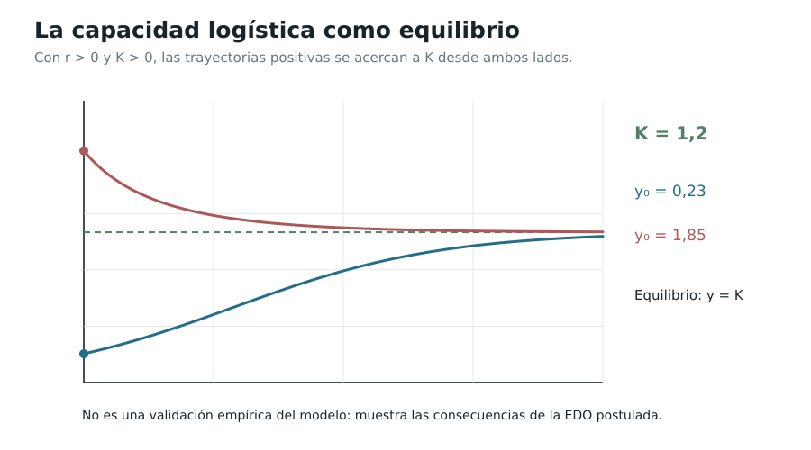

Capítulo 10. De las leyes de cambio a las ecuaciones diferenciales
Índice del libro · Prefacio · Itinerarios
Exposición · Ejercicios · Soluciones · Notas históricas
Pregunta generadora. Si no conocemos una función, pero sabemos cómo debe cambiar en cada instante, ¿podemos reconstruirla? ¿Cuánta información contiene una ley diferencial, qué añade una condición inicial y cuándo esa información determina una sola trayectoria?
El Teorema Fundamental del Cálculo de C06 permite recuperar una cantidad a partir de su tasa conocida. En un problema físico o geométrico, sin embargo, la tasa puede depender también de la cantidad que deseamos hallar: una población crece más deprisa cuando hay más individuos, la temperatura cambia de acuerdo con su distancia al ambiente y la aceleración de un oscilador depende de su posición. La relación entre una función desconocida y sus derivadas recibe el nombre de ecuación diferencial. Su estudio vuelve a reunir los tres hilos del libro: variación, acumulación y aproximación.
Presentaremos un corpus de problemas en una variable real que se puede resolver y justificar íntegramente con C00–C09. No confundiremos una fórmula que satisface una ecuación con una prueba de que todas sus soluciones tienen esa forma; tampoco confundiremos una solución definida durante un tiempo limitado con una trayectoria global. La existencia y la unicidad se probarán para familias concretas, sin importar un teorema general de Picard–Lindelöf cuyo aparato de aproximaciones sucesivas y estimaciones abstractas no pertenece a este volumen.
10.1. La incógnita es una función, no un número
Definición 10.1 (ecuación diferencial ordinaria; EDC-C10-DEF-001). Una ecuación diferencial ordinaria (EDO) relaciona una función desconocida \(y:I\to\mathbb R\), definida en un intervalo \(I\subseteq\mathbb R\), con una o varias derivadas de \(y\) respecto de una variable independiente. Una ecuación explícita de primer orden tiene la forma
\[ y'(t)=F(t,y(t)), \]
donde \(F:D\to\mathbb R\) está definida en un dominio \(D\subseteq\mathbb R^2\). Una solución clásica es una función \(y\in C^1(I)\) —si \(I\) es abierto— cuya gráfica satisface \((t,y(t))\in D\) y la igualdad en cada \(t\in I\). Cuando \(I\) tiene extremos, se exige continuidad hasta ellos y la igualdad en su interior; una derivada lateral sólo se empleará si se anuncia explícitamente. Para una ecuación de segundo orden exigiremos \(y\in C^2(I)\).
Definición 10.2 (problema de valor inicial; EDC-C10-DEF-002). Un problema de valor inicial (PVI) añade \(y(t_0)=y_0\), con \(t_0\in I\) y \((t_0,y_0)\in D\). Existencia pregunta si hay al menos una solución; unicidad en una clase y dominio dados pregunta si dos soluciones con ese dato deben coincidir donde ambas estén definidas. Intervalo de existencia designa el intervalo concreto sobre el que se ha verificado la trayectoria. No afirmaremos prolongación más allá de un punto donde la fórmula pierda sentido.
Las igualdades \(y'=2t\), \(y'=-3y\) y \(y'=t+y\) son tres EDO de primer orden, pero plantean dificultades diferentes. La ecuación \(y''+\omega^2y=0\) es de segundo orden: para determinar una trayectoria particular requeriremos dos datos, por ejemplo posición y velocidad iniciales. La notación \(dy/dt\) recuerda una tasa de cambio, pero la ecuación es una igualdad entre funciones y sus derivadas, no una licencia para separar símbolos como números independientes.
10.2. Reconstrucción cuando la tasa es conocida
Teorema 10.1 (reconstrucción mediante acumulación; EDC-C10-THM-001). Sea \(J\subseteq\mathbb R\) un intervalo abierto, \(g:J\to\mathbb R\) continua, \(t_0\in J\) y \(y_0\in\mathbb R\). Existe una única solución \(y\in C^1(J)\) del PVI
\[ y'=g(t),\qquad y(t_0)=y_0, \]
y viene dada por
\[ \boxed{y(t)=y_0+\int_{t_0}^{t}g(s)\,ds\qquad(t\in J).} \]
Demostración. En cualquier segmento contenido en \(J\), la continuidad de \(g\) asegura integrabilidad propia (C05). La primera parte del Teorema Fundamental (C06) da \(y'=g\) y la integral nula en \(t=t_0\) asegura el dato inicial. Si \(z\) es otra solución, \((y-z)'=0\) en \(J\); el teorema del valor medio de C03 implica que \(y-z\) es constante, y esa constante vale cero en \(t_0\). \(\square\)
Proposición 10.1 (forma integral del PVI; EDC-C10-PRP-001). Sea \(F:D\to\mathbb R\) continua y \(y\in C^1(I)\) con gráfica en \(D\), donde \(I\) es intervalo. Entonces \(y'=F(t,y)\) en el interior si y sólo si, para cualquier \(t_0,t\in I\),
\[ y(t)=y(t_0)+\int_{t_0}^{t}F(s,y(s))\,ds. \]
Demostración. La composición del integrando es continua. La implicación directa es C06 aplicado a \(y'\). En la inversa, derivamos la acumulación por la primera parte de C06. En un intervalo cerrado basta interpretar derivadas en puntos interiores. \(\square\)
La forma integral es la herramienta de comparación que necesitaremos más adelante. Importante: esta equivalencia no demuestra existencia para una función arbitraria \(F\); empieza suponiendo que la función \(y\) del enunciado está disponible.
10.3. Crecimiento y decaimiento proporcionales
Considérese la ley \(y'=ky\), con \(k\in\mathbb R\) constante. La función \(y(t)=Ce^{kt}\) es candidata porque su derivada es \(kCe^{kt}\). Sin embargo, verificar una candidata no basta para demostrar que no existen otras.
Teorema 10.2 (ley proporcional, también variable; EDC-C10-THM-002). Si \(a:J\to\mathbb R\) es continua en un intervalo abierto \(J\), entonces el PVI \(y'=a(t)y\), \(y(t_0)=y_0\) tiene una única solución \(C^1\) sobre todo \(J\):
\[ \boxed{y(t)=y_0\exp\left(\int_{t_0}^{t}a(s)\,ds\right).} \]
Demostración. Sea \(A(t)=\int_{t_0}^{t}a(s)\,ds\). C06 proporciona \(A'=a\). Las reglas de cadena y producto de C02 dan \((y_0e^A)'=a y_0e^A\), y en \(t_0\) vale \(y_0\). Para cualquier otra solución \(z\), derivamos \(e^{-A(t)}z(t)\) y obtenemos \(e^{-A}(z'-az)=0\). Por C03 esta expresión es constante e igual a \(y_0\). Así \(z=y_0e^A\). No hemos dividido por \(z\): la prueba también cubre la solución nula \(y_0=0\). \(\square\)
La exponencial conserva el signo de \(y_0\). Para \(a=k>0\) hay crecimiento exponencial si \(y_0>0\); para \(k<0\) hay decaimiento hacia cero al avanzar el tiempo. Si \(y_0=0\), la trayectoria sigue siendo idénticamente cero. Cuando \(a(t)\) cambia de signo, la función \(A(t)\) registra el crecimiento acumulado, no necesariamente monótono.
10.4. El factor integrante: un teorema completo de primer orden
Una ley que incluye aporte externo tiene la forma \(y'+p(t)y=q(t)\). Debemos construir una función que transforme el lado izquierdo en una derivada de producto, en lugar de tratar \(p(t)y(t)\) como si fuese independiente de \(y\).
Teorema 10.3 (EDO lineal inhomogénea; EDC-C10-THM-003). Sean \(p,q:J\to\mathbb R\) continuas, \(J\) intervalo abierto y \((t_0,y_0)\in J\times\mathbb R\). Definamos
\[ P(t)=\int_{t_0}^{t}p(s)\,ds,\qquad \mu(t)=e^{P(t)}>0. \]
Entonces existe una única solución \(C^1\) sobre \(J\) del PVI \(y'+py=q\), \(y(t_0)=y_0\), dada por
\[ \boxed{y(t)=e^{-P(t)}\left(y_0+\int_{t_0}^{t}e^{P(s)}q(s)\,ds\right).} \]
Demostración. Por el Teorema Fundamental, \(P'=p\), y por la cadena, \(\mu'=p\mu\). Si \(y\) satisface la ecuación, el producto cumple \((\mu y)'=\mu(y'+py)=\mu q\). Integrando desde \(t_0\) y recordando \(\mu(t_0)=1\), obtenemos la fórmula; así toda solución está forzosamente determinada. Recíprocamente, el miembro derecho define una función \(C^1\) en todo \(J\) porque el integrando es continuo. Al derivar \(\mu y=y_0+\int_{t_0}^t\mu q\) recuperamos \(\mu(y'+py)=\mu q\); \(\mu>0\) permite dividir y verificar la EDO y el dato. \(\square\)
Corolario 10.1 (variación de la constante; EDC-C10-COR-001). Con \(p,q\) continuas, toda solución sobre un intervalo \(J\) de \(y'+py=q\) se obtiene sumando una solución particular \(y_p\) y una solución \(Ce^{-P(t)}\) de la homogénea; \(C\in\mathbb R\).
Demostración. La diferencia de dos soluciones satisface \(z'+pz=0\) y el Teorema 10.2 da \(z=Ce^{-P}\). Inversamente, por linealidad de la derivada \(y_p+z\) satisface la ecuación. \(\square\)
Ejemplo. Si \(y'+2y=3\), \(y(0)=1\), entonces \(P(t)=2t\) y
\[ y(t)=e^{-2t}\left(1+3\int_0^t e^{2s}ds\right)=\frac32-\frac12e^{-2t}. \]
La solución existe para todo \(t\in\mathbb R\); comprobar \(y'+2y=3\) es inmediato. No es correcto cancelar la función \(e^{P(s)}\) situada dentro de la integral con el factor \(e^{-P(t)}\) exterior: dependen de variables diferentes.
10.5. La importancia del dato inicial y de la estabilidad
Una ley diferencial no selecciona necesariamente una función hasta que fijamos un dato. Para ecuaciones lineales, además, podemos medir cuánto afecta cambiarlo.
Teorema 10.4 (dependencia cuantitativa de datos y fuentes; EDC-C10-THM-004). Sea \(p\) continua en un intervalo \([t_0,T]\), \(T>t_0\), y \(|p(t)|\le P_*\) allí. Sean \(y_1,y_2\) las soluciones de
\[ y_i'+py_i=q_i,\qquad y_i(t_0)=a_i\quad(i=1,2), \]
con \(q_1,q_2\) continuas y \(|q_1(t)-q_2(t)|\le\eta\). Entonces, para \(t_0\le t\le T\),
\[ \boxed{|y_1(t)-y_2(t)|\le e^{P_*(t-t_0)}\bigl(|a_1-a_2|+\eta(t-t_0)\bigr).} \]
Demostración. Apliquemos el Teorema 10.3 a la diferencia \(w=y_1-y_2\), con fuente \(q_1-q_2\). Si \(t_0\le s\le t\), entonces
\[ |e^{-P(t)}e^{P(s)}|=\exp\left(-\int_s^t p(u)du\right)\le e^{P_*(t-s)}\le e^{P_*(t-t_0)}. \]
Análogamente, \(|e^{-P(t)}|\le e^{P_*(t-t_0)}\). Tomando módulos en la expresión integral de \(w\) y aplicando las cotas, resulta el enunciado. La desigualdad usa únicamente positividad de la exponencial, las estimaciones integrales de C05 y la fórmula ya probada. \(\square\)
La estimación no es una afirmación sobre modelos arbitrarios no lineales ni sobre la exactitud de mediciones físicas: especifica la sensibilidad matemática dentro de una clase de ecuaciones. En particular, datos iniciales iguales y fuentes iguales producen soluciones idénticas.
10.6. Separar variables sin dividir por cero
Pasemos a \(y'=a(t)b(y)\). La escritura sugestiva \(dy/b(y)=a(t)dt\) puede orientar el cálculo, pero sólo es legítima sobre una rama donde \(b(y)\ne0\) y donde la función inversa utilizada exista.
Teorema 10.5 (construcción por separación; EDC-C10-THM-005). Sean \(a:J\to\mathbb R\) continua, \(J\) intervalo abierto; \(b:K\to\mathbb R\) continua sobre un intervalo abierto \(K\) y sin ceros en \(K\). Fijemos \(t_0\in J\) y \(y_0\in K\). Definamos
\[ A(t)=\int_{t_0}^{t}a(s)ds,\qquad B(u)=\int_{y_0}^{u}\frac{dv}{b(v)}\quad(u\in K). \]
Entonces \(B'(u)=1/b(u)\), por lo que \(B\) es estrictamente monótona, con inversa \(B^{-1}\) definida en el intervalo abierto \(B(K)\). En el intervalo abierto
\[ J_*=\{t\in J:A(t)\in B(K)\}\quad\text{(componente que contiene a $t_0$)}, \]
la función \(y(t)=B^{-1}(A(t))\) es una solución \(C^1\) del PVI \(y'=a(t)b(y)\), \(y(t_0)=y_0\); es la única solución cuya imagen permanece en \(K\) sobre cualquier subintervalo común conectado que contenga \(t_0\).
Demostración. La continuidad de \(1/b\) da \(B'\), de signo constante en el intervalo \(K\) porque \(b\) es continua y no se anula (valor intermedio C00). Por la regla del inverso de C02, \(B^{-1}\) es derivable con derivada \(b(B^{-1}(v))\). La cadena produce \(y'=b(y)A'=a(t)b(y)\); \(A(t_0)=B(y_0)=0\). Si \(z\) es otra solución cuya imagen está en \(K\), la cadena da \((B\circ z)'=z'/b(z)=a(t)=A'(t)\). Por el valor medio, \(B(z(t))-A(t)\) es constante, y vale cero en \(t_0\). La inyectividad de \(B\) implica \(z=y\). La división fue realizada sólo después de verificar \(b(z)\ne0\). \(\square\)
Definición 10.3 (equilibrio; EDC-C10-DEF-003). Para una EDO autónoma \(y'=b(y)\), un equilibrio es una constante \(c\) con \(b(c)=0\); \(y(t)\equiv c\) es entonces una solución. En la ecuación \(y'=a(t)b(y)\) cualquier cero de \(b\) también origina una solución constante, aunque \(a\) dependa del tiempo.
Proposición 10.2 (ramas y equilibrios; EDC-C10-PRP-002). La división por \(b(y)\) en el Teorema 10.5 no descubre las soluciones de equilibrio; éstas deben añadirse separadamente. Si la trayectoria queda en una rama \(K\) sin ceros, no puede atravesar uno de esos ceros mientras permanezca en la clase de funciones obtenidas mediante \(B^{-1}\).
Demostración. Para \(b(c)=0\), la función constante satisface \(y'=a(t)b(y)=0\). La fórmula \(B\) no está definida a través de \(c\) como integral de \(1/b\), y la expresión \(B^{-1}(A(t))\) siempre toma valores en \(K\), donde \(b\) no se anula. \(\square\)
La proposición no asegura que ninguna solución de una EDO continua pueda salir de un equilibrio; sin hipótesis adicionales la unicidad puede fallar. Construiremos un contraejemplo en la sección siguiente.
10.7. Unicidad bajo regularidad y su fracaso sin ella
Lema 10.1 (comparación exponencial elemental; EDC-C10-LEM-001). Sea \(u:[a,b]\to[0,\infty)\) de clase \(C^1\), \(u(a)=0\) y \(u'(t)\le L u(t)\) para \(L\ge0\). Entonces \(u\equiv0\).
Demostración. La función \(v(t)=e^{-L(t-a)}u(t)\) cumple \(v'(t)=e^{-L(t-a)}(u'-Lu)\le0\). Es no creciente (C03), y como \(v(a)=0\) y \(v\ge0\), debe ser cero en todo el intervalo. \(\square\)
Teorema 10.6 (unicidad para soluciones existentes; EDC-C10-THM-006). Sea \(F\) continua en un rectángulo \(D=[a,b]\times[c,d]\) y supongamos que existe \(L\ge0\) tal que
\[ |F(t,u)-F(t,v)|\le L|u-v| \qquad(t\in[a,b],\ u,v\in[c,d]). \]
Si \(y,z\in C^1([a,b])\) son dos soluciones ya existentes de \(w'=F(t,w)\) cuyas imágenes están en \([c,d]\) y \(y(t_0)=z(t_0)\) para algún \(t_0\in[a,b]\), entonces \(y=z\) en \([a,b]\).
Demostración. Para \(t\ge t_0\), por la Proposición 10.1,
\[ |y(t)-z(t)|\le L\int_{t_0}^{t}|y(s)-z(s)|ds. \]
Sea \(u(t)=\int_{t_0}^{t}|y(s)-z(s)|ds\). Es no negativa y \(C^1\), \(u(t_0)=0\), y \(u'\le Lu\). El Lema 10.1 da \(u=0\); por tanto \(|y(t)-z(t)|=u'(t)=0\) para \(t\ge t_0\). Si \(t\le t_0\), aplicamos el mismo argumento a la variable invertida \(s=t_0-t\), o bien a la integral \(u(t)=\int_t^{t_0}|y-z|\) y a \(u(t_0-s)\), obteniendo también coincidencia a la izquierda. No hemos demostrado existencia para todo campo continuo Lipschitz: ésa es una pregunta diferente. \(\square\)
Proposición 10.3 (campo continuo sin unicidad; EDC-C10-PRP-003). El PVI \(y'=\sqrt{|y|}\), \(y(0)=0\) posee infinitas soluciones \(C^1\) sobre \(\mathbb R\).
Demostración. Para cada \(c\ge0\) definamos
\[ y_c(t)=\begin{cases}0,&t\le c,\\(t-c)^2/4,&t>c.\end{cases} \]
La función y su derivada son continuas en \(c\): por la derecha \(y_c'(t)=(t-c)/2\to0\). Para \(t>c\), \(\sqrt{|y_c(t)|}=(t-c)/2=y_c'(t)\); para \(t\le c\) ambos lados son cero. En \(t=0\le c\), \(y_c(0)=0\). Los distintos valores de \(c\) producen trayectorias distintas; también \(y\equiv0\) es solución. La función \(F(y)=\sqrt{|y|}\) es continua, pero no satisface una cota Lipschitz cerca de \(0\): \(\sqrt h/h=1/\sqrt h\to\infty\) cuando \(h\downarrow0\). \(\square\)
Advertencia lógica. El Teorema 10.6 dice que cierto tipo de regularidad impide la bifurcación de trayectorias ya existentes. La Proposición 10.3 demuestra que sólo la continuidad del campo no es suficiente para unicidad. Ninguno de estos resultados autoriza afirmar existencia universal de soluciones para campos arbitrarios.
10.8. Crecimiento logístico: el límite de una ley proporcional
Supongamos que la tasa de una población idealizada crece proporcionalmente a su tamaño, pero disminuye cuando éste se acerca a una capacidad \(K>0\). El modelo elegido es
\[ y'=r y\left(1-\frac{y}{K}\right),\qquad r>0. \]
La interpretación biológica requiere justificar empíricamente tanto los parámetros como el intervalo de tiempo; la matemática puede estudiar rigurosamente las consecuencias si la ley se supone válida.
Teorema 10.7 (PVI logístico con dato positivo; EDC-C10-THM-007). Para \(r,K>0\), \(t_0\in\mathbb R\) y \(y_0>0\), el PVI anterior tiene sobre todo el semieje \(t\ge t_0\) la solución
\[ \boxed{y(t)=\frac{K}{1+A e^{-r(t-t_0)}},\qquad A=\frac{K}{y_0}-1.} \]
Es positiva, única entre las soluciones que permanecen acotadas en cada intervalo temporal compacto de existencia común, y satisface \(\lim_{t\to\infty}y(t)=K\). Si \(0<y_0<K\) es creciente; si \(y_0>K\) es decreciente; si \(y_0=K\), es constante.
Demostración. De \(y_0>0\) resulta \(A>-1\). Para \(t\ge t_0\), \(0<e^{-r(t-t_0)}\le1\). Si \(A\ge0\), el denominador es al menos uno; si \(-1<A<0\), es al menos \(1+A>0\). Por tanto la expresión es diferenciable y positiva en todo el semieje. Calculamos
\[ y'(t)=\frac{KrA e^{-r(t-t_0)}}{(1+A e^{-r(t-t_0)})^2} =r y(t)\left(1-\frac{y(t)}K\right), \]
y en \(t=t_0\) vale \(K/(1+A)=y_0\). En el rectángulo temporal compacto que encierra las imágenes de dos soluciones, el campo \(F(y)=ry(1-y/K)\) satisface
\[ |F(u)-F(v)|=r|u-v|\left|1-\frac{u+v}{K}\right|\le L|u-v| \]
para una constante \(L\) adecuada porque \(u,v\) están acotados. El Teorema 10.6 fuerza unicidad sobre todo compacto del intervalo común. Finalmente \(e^{-r(t-t_0)}\to0\) y da el límite \(K\). El signo de \(y'\) en la fórmula, o el factor \(1-y/K\), demuestra la monotonía anunciada. \(\square\)
Corolario 10.2 (equilibrios y dominio; EDC-C10-COR-002). \(y\equiv0\) y \(y\equiv K\) son equilibrios logísticos. Si \(y_0<0\), la misma fórmula algebraica se anula en el denominador en un tiempo futuro finito; por consiguiente no describe una solución global sobre \([t_0,\infty)\).
Demostración. Los valores constantes anulan el campo. Para \(y_0<0\), \(A=K/y_0-1<-1\) y \(1+A e^{-r(t-t_0)}=0\) cuando \(t=t_0+(\ln(-A))/r>t_0\). En el intervalo desde \(t_0\) hasta ese tiempo sin incluirlo la fórmula satisface la EDO; no puede prolongarse por ella a través del denominador nulo. \(\square\)
Los parámetros \(r\) y \(K\) no son conclusiones matemáticas extraídas de un censo: son hipótesis de un modelo que debe verificarse por otros medios. La curva logística está asociada a los estudios poblacionales decimonónicos de Verhulst; las fechas y el alcance histórico se precisan en las notas.

10.9. Enfriamiento: una diferencia que disminuye
Teorema 10.8 (enfriamiento lineal idealizado; EDC-C10-THM-008). Sean \(k>0\), \(T_a\in\mathbb R\) constantes, \(t_0\in\mathbb R\) y \(T_0\in\mathbb R\). El PVI
\[ T'(t)=-k(T(t)-T_a),\qquad T(t_0)=T_0, \]
tiene una única solución sobre \(\mathbb R\):
\[ \boxed{T(t)=T_a+(T_0-T_a)e^{-k(t-t_0)}.} \]
Para \(t\ge t_0\), la diferencia respecto del ambiente conserva su signo y tiende a cero.
Demostración. Ponemos \(u=T-T_a\). Como \(T_a\) es constante, \(u'=-ku\) y \(u(t_0)=T_0-T_a\). El Teorema 10.2 aporta la fórmula y su unicidad; el límite se obtiene de \(e^{-k(t-t_0)}\to0\). \(\square\)
Proposición 10.4 (ambiente variable; EDC-C10-PRP-004). Si \(T_a(t)\) es continua, el PVI \(T'=-k(T-T_a(t))\), \(T(t_0)=T_0\) tiene la solución única
\[ T(t)=e^{-k(t-t_0)}\left(T_0+k\int_{t_0}^{t}e^{k(s-t_0)}T_a(s)ds\right). \]
Demostración. Reescribimos \(T'+kT=kT_a(t)\) y aplicamos el Teorema 10.3 con \(p=k\), \(q=kT_a\). \(\square\)
Un coeficiente \(k\) expresado en unidades de tiempo inverso permite que \(k(t-t_0)\) sea adimensional. La ley no afirma que cualquier proceso real de transferencia de calor siga exactamente esta relación para diferencias arbitrariamente grandes ni que el ambiente permanezca constante: tales condiciones son parte del modelo, no de la demostración.
10.10. Fuerza resistiva y velocidad terminal
Consideremos el movimiento vertical hacia abajo de un cuerpo de masa \(m>0\) sometido a gravedad idealizada \(mg\) y resistencia lineal \(-\gamma v\), con \(g,\gamma>0\). El modelo escalar de Newton para la velocidad es
\[ mv'=mg-\gamma v. \]
Teorema 10.9 (aproximación a la velocidad terminal; EDC-C10-THM-009). Para \(m,g,\gamma>0\) y \(v(t_0)=v_0\), la ecuación anterior tiene una única solución en toda la recta,
\[ \boxed{v(t)=v_\infty+(v_0-v_\infty)e^{-(\gamma/m)(t-t_0)},\qquad v_\infty=\frac{mg}{\gamma}.} \]
Para \(t\ge t_0\), \(v(t)\to v_\infty\), conservando el signo de \(v-v_\infty\).
Demostración. Dividiendo por la constante no nula \(m\), la ecuación es \(v'+(\gamma/m)v=g\). La función constante \(v_\infty\) es una solución particular pues \((\gamma/m)v_\infty=g\). Su diferencia \(w=v-v_\infty\) satisface \(w'=-(\gamma/m)w\). El Teorema 10.2 proporciona la solución y su unicidad, mientras la exponencial decreciente prueba el límite. \(\square\)
La velocidad terminal es el valor en que se equilibran las fuerzas dentro del modelo; no significa que la aceleración haya sido cero desde el comienzo. Con \(m\) en kilogramos, \(v\) en metros por segundo y \(\gamma\) en kilogramos por segundo, \(mg/\gamma\) tiene unidades de velocidad. Una resistencia cuadrática requiere una ecuación diferente: no debe deducirse de este resultado.
10.11. Oscilación armónica y aproximación de una trayectoria
El cálculo de una variable permite también un ejemplo cerrado de segundo orden sin invocar un teorema general de existencia. Una fuerza restitutiva proporcional al desplazamiento da \(x''+\omega^2x=0\), con \(\omega>0\) constante.
Teorema 10.10 (oscilador armónico; EDC-C10-THM-010). Dados \(\omega>0\), \(t_0\in\mathbb R\), \(x_0,v_0\in\mathbb R\), existe una única solución \(C^2\) sobre \(\mathbb R\) del PVI
\[ x''+\omega^2x=0,\qquad x(t_0)=x_0,\quad x'(t_0)=v_0, \]
y es
\[ \boxed{x(t)=x_0\cos(\omega(t-t_0))+\frac{v_0}{\omega}\sin(\omega(t-t_0)).} \]
Demostración. La derivación directa, por C02, muestra \(x''=-\omega^2x\) y las condiciones iniciales. Para unicidad, sean \(x_1,x_2\) dos soluciones y \(w=x_1-x_2\); entonces \(w''+\omega^2w=0\) y \(w(t_0)=w'(t_0)=0\). Derivando la energía matemática
\[ E(t)=(w'(t))^2+\omega^2(w(t))^2\ge0 \]
obtenemos \(E'=2w'(w''+\omega^2w)=0\). Por el valor medio \(E\) es constante, y vale cero en \(t_0\); como sus dos sumandos son no negativos y \(\omega>0\), ambos se anulan en todo \(t\), luego \(w=0\). \(\square\)
Lema 10.2 (un paso de Euler y su error local; EDC-C10-LEM-002). Si \(y\in C^2([t,t+h])\), \(h>0\), es una solución de \(y'=F(s,y(s))\) y \(|y''(s)|\le M\) en el intervalo, entonces
\[ \boxed{|y(t+h)-[y(t)+hF(t,y(t))]|\le\frac12Mh^2.} \]
Demostración. Taylor–Lagrange de orden uno (C09) da \(y(t+h)=y(t)+hy'(t)+\tfrac12h^2y''(\xi)\) para un \(\xi\in(t,t+h)\). Sustituimos la ley diferencial y tomamos valores absolutos. \(\square\)
La expresión \(y_{j+1}=y_j+hF(t_j,y_j)\) se denomina paso explícito de Euler. El lema controla un solo paso iniciado en un punto exacto de la solución, no demuestra automáticamente una cota global para muchos pasos numéricos ni un teorema general de convergencia del algoritmo. Para estudiar errores acumulados necesitaríamos hipótesis y estimaciones suplementarias.
10.12. Del problema inverso de tangentes a la teoría de las trayectorias
La pregunta de este capítulo se relaciona históricamente con el problema inverso de tangentes: si la pendiente de una curva está sometida a cierta ley, ¿qué curva puede tenerla? Los métodos de Newton, Leibniz, los Bernoulli y Euler se desarrollaron en relación con problemas de mecánica, geometría y cálculo; la teoría moderna distingue luego entre hallar fórmulas, decidir existencia, demostrar unicidad y controlar la dependencia de las condiciones iniciales. Nuestras demostraciones anteriores están escritas con las herramientas de C00–C09 y no se presentan como transcripciones de esos autores. Las notas históricas precisan qué testimonios modernos y registros primarios fueron efectivamente examinados.
Hemos probado existencia y unicidad global para las ecuaciones lineales de primer orden con coeficientes continuos sobre su intervalo de datos; existencia y unicidad en una rama para las separables que no cruzan ceros; unicidad condicional para soluciones ya existentes bajo una cota Lipschitz; y existencia y unicidad explícitas para la oscilación armónica lineal. Hemos exhibido una EDO con infinitas soluciones para un mismo dato, y un modelo logístico cuya fórmula puede perder sentido en tiempo finito para ciertos valores iniciales. Así, resolver una ecuación no es siempre el mismo problema lógico.
Mapa de dependencias y frontera
- C00: continuidad, intervalos, valor intermedio, límites y teoremas de convergencia elementales.
- C01–C03: definición de derivada, producto, cadena, inversa, valor medio y monotonía.
- C05–C07: integral propia, Teorema Fundamental, primitiva e integración orientada.
- C08–C09: series sólo como funciones ya construidas, Taylor–Lagrange para la estimación del paso de Euler; no se importan resultados de EDO futura.
- Resultados originales de C10:
EDC-C10-THM-001--010,LEM-001--002,PRP-001--004,DEF-001--003,COR-001--002. - Fuera del alcance: teorema general de existencia de Peano, Picard–Lindelöf como teorema demostrado, problemas de frontera de orden alto, sistemas y EDP, teoría de control, estabilidad no lineal global y análisis funcional.
Los treinta ejercicios desarrollan el diagnóstico de hipótesis, la construcción explícita de trayectorias, la unicidad, los equilibrios, los modelos y el error de aproximación. Las soluciones se presentan de forma separada, cada una con su identificador propio y comprobación por sustitución cuando corresponde. La documentación histórica conserva referencias, niveles de acceso y límites de atribución.